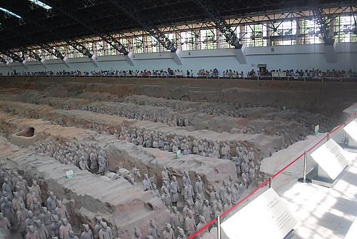

|

The emperor believed the army would become animated after his death and protect him. Construction took 38 years and 720 thousand builders to complete. Numbers: 8,000+ warriors, 600+ horses, 130 chariots (current estimates, not all have been unearthed yet). Buried for 2,180 years. Discovered March 1974 by a farmer. |